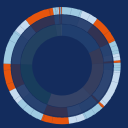

<md-card>
	<md-card-content>
		作業時間累計<br/>
		<div class="pattern-legends">
			作業毎
			作業における個人の割合
			個人の各作業の割合
		</div>
	    <div ng-show="vm.analyzing">
	  		<md-progress-circular ng-disabled="!vm.analyzing" md-diameter="96" md-mode='indeterminate'></md-progress-circular>
	  	</div>
	  	<div ng-show="!vm.analyzing">
		    <sunburst-chart selector="pattern-sunburst" data="vm.sunburstData" pattern="vm.pattern" member="vm.member" select-data="vm.selectData"></sunburst-chart>
		    <pattern-box pattern="vm.pattern" select-data="vm.selectData"></pattern-box>
		</div>
	</md-card-content>
</md-card>